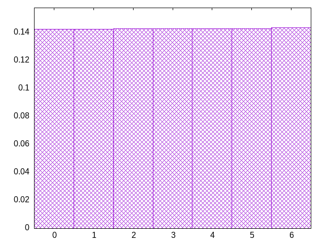
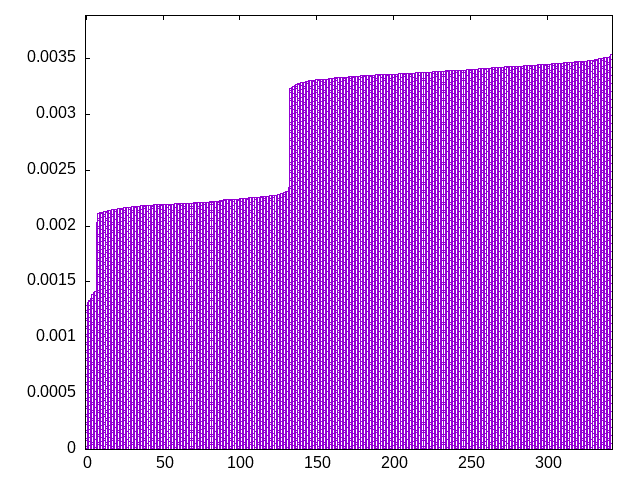
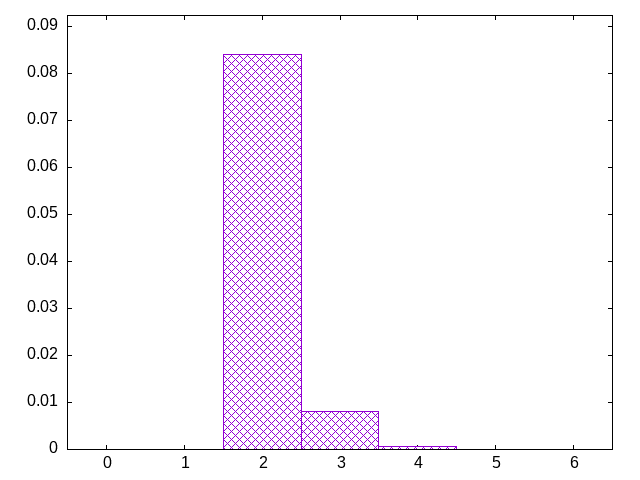

full random but with drought protection
tlzzljijssototlzjoiijsiltoizisjiislztojstzlziiolzojstloloijtzzjsszloliotljsojzjsoitslzssoljizstostttlljizisooitttljzltsioilsiojztttjssloitjzosljiisjitzjosltiiizsjiiolitosiztjiitlilostzjoszzsiltjllzooiisootjolzoljisoztizstiljzooztljssiotzzlziijosootsolzjitlljzstooiziojltoszoszoijtlotzisltjzzozsszisltjztoolssiojtjzsiilzisootjsjozliojljtsjjlzoiillltsojizzssjsltsoiszzljsztooiittlojszozojitjljjszzzolitzzijszszolstzjizsolooljtsoizjsstjllzsoitzzojtiltsitzoltjlszozioostijlzootjtistttlztoojoissjlsztitoizozjlsiijtzoozsjlzsiztzlojjliossjtztssolizsjoiitlzliiisjottjzilzlsiloltjosizltlotjotjsizoljtszzjtiszolsoitijzzzjolsotsiolzjzttzjosizloooltsjjsizljzootljisotojzssoloijitzissitloljltzizsizsozjltitjlzstojjzzijilistoiotzsjzlzzjliotisljjztsjtojizlloiisstijizilotjostsotziltojjsjsltzioitzztjsliolitzlsljzjsozitlztojtstjliitzzozsstjlzitttollssjiztstjosltiltzloljtssoitjztjloljssiozstjtilijsloziiotijtjslozzttoiiojslsjzstioojlozzsjjtiioolzotstjzsiozljozztljsiistjoozolozsiltjlzjoztlsiozzjjilotlssljzljisotsltl
bagginess: 0.0268
bagginess6: 0.3303
distribution1_maxgap: 0.00019900000000000473
distribution2_maxgap: 0.006426006426006426
distribution3_maxgap: 0.0009140018280036559
distribution4_maxgap: 7.100021300063898e-05
diversity: 5.2
entropy: 11.472
evenness_diff: 5.858
evenness_same: 4.708
maxdrought: 11.0
maxflood: 6
peakdrought: 11.0
repchance: 0.1022
seq4_coverage: 1.0000
seq4_follow: 6.755
distribution1_graph:

distribution3_graph:

flood_graph:

similarity: (lower is more similar)
| 0.023 | wet |
| 0.160 | seamless_deep_pure |
| 0.165 | wet2 |
| 0.239 | deepbag_window4 |
| 0.351 | deepbag_fixed7 |
| 0.388 | weight |
| 0.411 | weight_lin_pure |
| 0.430 | weight2 |
| 0.456 | balanced5 |
| 0.464 | bag |
| 0.465 | bag_pure |
| 0.485 | bag2 |
| 0.494 | shift3_5 |
| 0.537 | shift7 |
| 0.547 | balanced7 |
| 0.569 | deepbag_fixed4 |
| 0.668 | weight_exp |
| 0.678 | tgm |
| 0.679 | tgm_pure |
| 0.761 | weight_exp_pure |
| 0.784 | seamless_bag_pure |
| 0.787 | nes_pure |
| 0.805 | nes |
| 0.856 | seamless_bag2_pure |
| 0.860 | tgm_tap_pure |
| 0.867 | deepbag_window7 |
| 0.869 | tgm_tap |
| 0.871 | shift10_5 |
| 0.871 | bag3 |
| 0.876 | seamless_bag3_pure |
| 0.878 | deepbag_window10 |
| 0.890 | bag4 |
| 0.891 | shift14 |
| 0.892 | balanced9 |
| 0.910 | balanced_long_mul_pure |
| 0.912 | balanced_long_add_pure |
| 0.916 | deepbag_fixed10 |
| 0.918 | shift21 |
| 0.978 | ti |
| 1.031 | fullrandom_pure |
| 1.036 | fullrandom |
| 2.682 | shift1_75 |
| 2.809 | repeat_recent_pure |
| 5.121 | repeat_last_pure |
| 8.789 | flatbag |
| 8.789 | flatbag_pure |